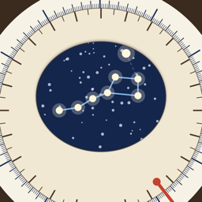

回して合わせる星座早見盤
学校で習った紙の星座早見盤を、そのまま iPhone と iPad に。星の円盤を指で回して、日付と時刻の目盛りを合わせます。
外側の円盤のふちに月日の目盛り、上の紙のふちに時刻の目盛り。円盤を回して、見たい日の目盛りを見たい時刻に合わせると、その時に見える星空が窓の中に出ます。
- 紙の早見盤と同じ形：円盤を1本指で回すと時刻が動き、合っている所に赤い線が出ます
- 住んでいる所（47都道府県）を選ぶと、窓（地平線）の形が、その場所の緯度に合わせて変わります。位置情報・カメラは使いません
- 星や星座の名前を押すと、いまどの方角の、どのくらいの高さにあるかを文で出します
- 「見える星座」：その時刻に見える星座を、高い順に（南の空の高い所、など）
- 「星座の図鑑」：88星座の見ごろ（夜9時に南の空にくる日）と、その場所からの見え方
- 向いている方角を下にして持てるよう、早見盤を回せます。夜は「赤い光の画面」で
- 88星座・約2,800個の星が全部入っています。登録・課金はありません。インターネットにつながっていなくても使えます。画面のいちばん下に小さな広告が出ます